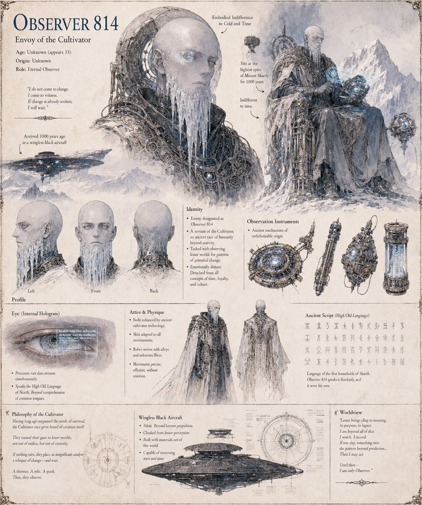

Observer 814
Envoy of the Cultivators · “the Dragon-Speaker” · Case Study 4,420
A field agent of the Cultivators, who came down onto Mount Skahr in a black, wingless vessel some four centuries before the war and was folded by the clans, within a generation, into the Dragon-Speaker, keeper of the mountain — a name he never corrects. When an ancestor of House Skarth climbs up to beg a token of divine favor, Observer 814 passes a double-walled steel flask across the gap between his instruments and the man's frostbitten hands with roughly the ceremony a lord might spend tossing a coin to a groom, and goes back to watching. Then he waits, at compound interest, for whichever descendant is careless enough to call the loan due. Four centuries on, Yvaine climbs to his ice cavern for a blessing on the war she has already decided to fight, and comes down the mountain certain she carries one he never gave her. He files the case as the most efficient the Envoy has recorded in eleven centuries of comparable seedings — and remains assigned to it.
“I do not come to change. I come to witness. If change is already written, I will wait.”
Appears in The Thermal Vessel War